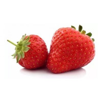

INICIO DA AULA
Listas ordenadas
- Levantar da cama
- Escovar os dentes
- Tomar café
- Tomar banho
- Sair de casa
Lista Não ordenas
- Levantar da cama
- Escovar os dentes
- Tomar café
- Tomar banho
- Sair de casa
Minhas linguagens favoritas
- Antigas
- Pascal
- visualbasc
- portugol
- Novas
- Python
- C#
- HTML5
Lista de definições
- HTML5
- lingaguem para marcação de termos em websites
- C#
- lingaguem para criação de jogos
- Java
- Linguagem de uso geral e diversificado
- JavaScript
- Linguagem para uso de interações em WEBSites
Aula sobre listas
marcando cor do texto
